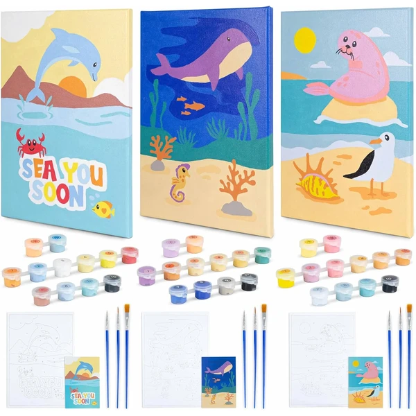
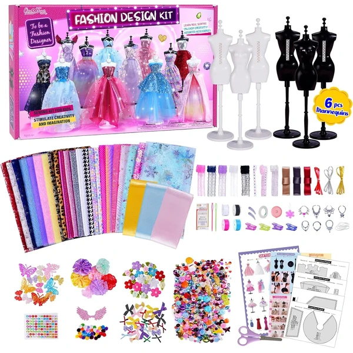

A los 6 años las manualidades pueden incluir proyectos más técnicos, como coser con aguja de plástico, tejer con telar sencillo o construir maquetas de papel. El niño ya sigue instrucciones escritas o con dibujos numerados, y disfruta de proyectos que se completan en varias sesiones. En esta selección encontrarás manualidades pensadas para esta edad.
¿Qué desarrollan las manualidades a los 6 años?
Seguir instrucciones numeradas en un proyecto de varias sesiones combina precisión, paciencia y organización.
- Motricidad fina
- Creatividad
- Concentración
- Paciencia
- Seguimiento de instrucciones
- Organización

JOYIN Rocas para Pintar
Un kit con 10 rocas y todo tipo de pinturas (estándar, metálicas y que brillan en la oscuridad), más gemas y pegatinas para decorar cada piedra a su gusto.
⭐ ¿Por qué nos gusta?
- ✔ Pinturas metálicas y que brillan en la oscuridad.
- ✔ Incluye gemas y pegatinas para decorar.
- ✔ 10 rocas, suficiente para varias sesiones.
💬 Lo que más destacan las familias
Lo que más suele gustar es la variedad de pinturas, sobre todo las que brillan en la oscuridad, que suelen ser la sorpresa favorita de los niños. También se valora que las rocas vengan ya preparadas para pintar sin comprar nada más, y que den para varias tardes de manualidades.
Ver en Amazon

Kit de Pintura Marmolado sobre Agua
Un kit para aprender la técnica del marmolado: se deja caer la pintura sobre un líquido especial, se dibujan espirales y el diseño se transfiere al papel, creando patrones únicos cada vez.
⭐ ¿Por qué nos gusta?
- ✔ Técnica distinta a pintar sobre papel directamente.
- ✔ Cada diseño sale único e irrepetible.
- ✔ Incluye 20 hojas de papel para varios intentos.
💬 Lo que más destacan las familias
Muchos padres coinciden en que engancha desde el primer intento, porque ver cómo la pintura se transforma en espirales sobre el agua tiene un efecto casi mágico. También gusta que cada resultado sea distinto, así que no hay dos creaciones iguales aunque se repita la técnica varias veces.
Ver en Amazon

Clementoni Taller de Bolígrafos
Un laboratorio creativo para diseñar y personalizar bolígrafos propios con distintos accesorios y decoraci, con un soporte práctico para exponer las creaciones terminadas.
⭐ ¿Por qué nos gusta?
- ✔ Resultado final útil: un bolígrafo para usar de verdad.
- ✔ Gran variedad de accesorios para personalizar.
- ✔ Incluye soporte para exponer el resultado.
💬 Lo que más destacan las familias
Una de las cosas más comentadas es lo satisfactorio que resulta terminar con un bolígrafo real, que luego usan a diario. También destacan que el proceso de personalización engancha, con accesorios de sobra para probar combinaciones distintas.
Ver en Amazon

EFO SHM Kit de Fabricación de Joyas
Un kit con colgantes de metal, cubiertas de resina transparente y más de 250 láminas con imágenes para colorear y convertir en pulseras y collares personalizados.
⭐ ¿Por qué nos gusta?
- ✔ Más de 250 láminas de imágenes para colorear.
- ✔ Combina pintura con fabricación de joyas.
- ✔ Resultado final: pulseras y collares para lucir.
💬 Lo que más destacan las familias
Los compradores valoran especialmente la cantidad de láminas para colorear, porque da para muchísimas piezas distintas sin repetir diseño. También se comenta que el resultado final, pulseras y collares terminados, es algo que los niños quieren lucir enseguida.
Ver en Amazon

BONNYCO Pintar por Números Animales Marinos
Un pack de 3 lienzos para pintar por números con temática de animales marinos, con pinturas que brillan en la oscuridad y colgadores para exponer el resultado en la pared.
⭐ ¿Por qué nos gusta?
- ✔ 3 lienzos, para pintar en varias sesiones.
- ✔ Incluye pintura que brilla en la oscuridad.
- ✔ Colgadores incluidos para exponer el cuadro.
💬 Lo que más destacan las familias
Entre los comentarios más habituales aparece lo bien que queda el resultado final una vez colgado en la pared, con un efecto muy vistoso gracias a la pintura que brilla en la oscuridad. También se valora que sean tres lienzos, así que la actividad da para varias sesiones sin perder el interés.
Ver en Amazon

Kit de Diseño de Moda con Maniquíes
Un kit con más de 1.000 piezas y 6 maniquíes ranurados para crear conjuntos de ropa sin necesidad de coser, combinando telas, cintas y adornos con métodos sencillos de atado o pegamento.
⭐ ¿Por qué nos gusta?
- ✔ Más de 1.000 piezas, para muchos conjuntos distintos.
- ✔ No requiere saber coser.
- ✔ 6 maniquíes incluidos para trabajar varios diseños.
💬 Lo que más destacan las familias
No es raro encontrar comentarios sobre lo mucho que engancha combinar telas y adornos sin necesidad de coser, algo que hace el proceso mucho más accesible para esta edad. Se agradece también tener varios maniquíes a la vez, porque permite montar más de un diseño en la misma sesión.
Ver en Amazon